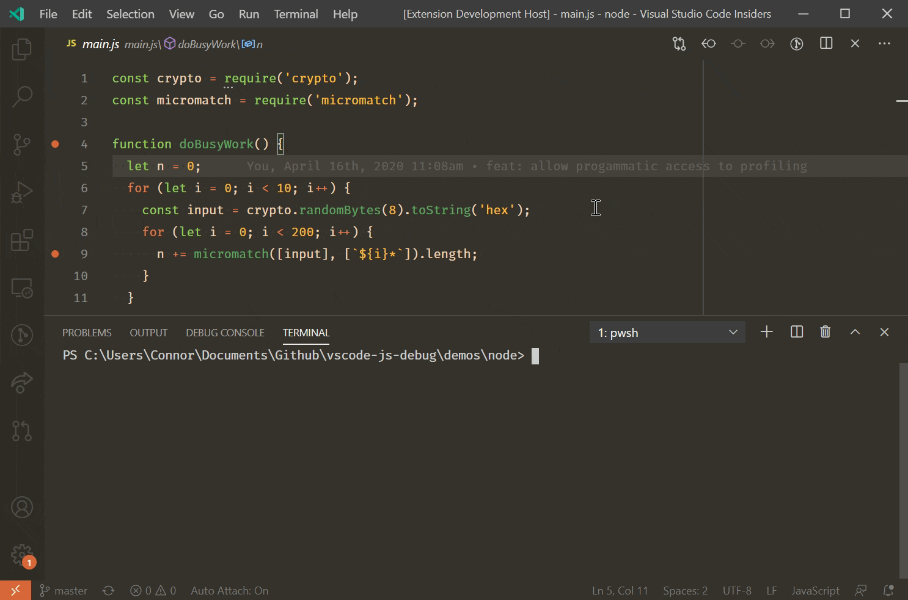
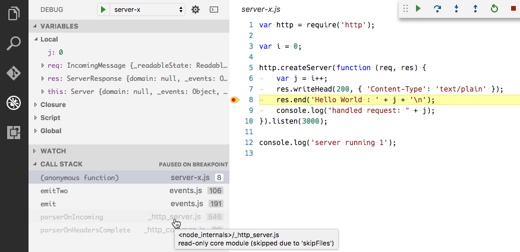

Node.js debugging in VS Code
The Visual Studio Code editor has built-in debugging support for the Node.js runtime and can debug JavaScript, TypeScript, and many other languages that are transpiled into JavaScript. Setting up a project for Node.js debugging is straightforward with VS Code providing appropriate launch configuration defaults and snippets.
There are a few ways you can debug your Node.js programs in VS Code:
- Use auto attach to debug processes you run in VS Code's integrated terminal.
- Use the JavaScript debug terminal, similar to using the integrated terminal.
- Use a launch config to start your program, or attach to a process launched outside of VS Code.
Auto Attach
If the Auto Attach feature is enabled, the Node debugger automatically attaches to certain Node.js processes that have been launched from VS Code's Integrated Terminal. To enable the feature, either use the Toggle Auto Attach command from the Command Palette (P (Windows, Linux Ctrl+Shift+P)) or, if it's already activated, use the Auto Attach Status bar item.
There are three modes for auto attach, which you can select in the resulting Quick Pick and via the debug.javascript.autoAttachFilter setting:
smart(default) - If you execute a script outside of yournode_modulesfolder or use a common 'runner' script like mocha or ts-node, the process will be debugged. You can configure the 'runner' script allow list using the Auto Attach Smart Pattern setting (debug.javascript.autoAttachSmartPattern).always- All Node.js processes launched in the Integrated Terminal will be debugged.onlyWithFlag- Only processes launched with the--inspector--inspect-brkflag will be debugged.
After enabling Auto Attach, you'll need to restart your terminal. This can be done by clicking the icon in the top right of the terminal, or just creating a new one. Then, the debugger should attach to your program within a second:

When auto attach is on, the Auto Attach item will appear in the status bar across the bottom of the VS Code window. Clicking it allows you to change the auto attach mode, or temporarily turn it off. Temporarily turning off auto attach is useful if you're running some one-off programs where you don't need debugging, but you don't want to disable the feature entirely.
Additional Configuration
Other Launch Configuration Properties
You can apply other properties normally found in launch.json to auto attach in the debug.javascript.terminalOptions setting. For example, to add node internals to your skipFiles, you could add the following to your user or workspace settings:
"debug.javascript.terminalOptions": {
"skipFiles": [
"<node_internals>/**"
]
},
Auto Attach Smart Patterns
In smart Auto Attach mode, VS Code will try to attach to your code, and not attach to build tools you aren't interested in debugging. It does this by matching the main script against a list of glob patterns. The glob patterns are configurable in the debug.javascript.autoAttachSmartPattern setting, which defaults to:
[
'!**/node_modules/**', // exclude scripts in node_modules folders
'**/$KNOWN_TOOLS$/**' // but include some common tools
];
$KNOWN_TOOLS$ is replaced with a list of common 'code runners' such as ts-node, mocha, ava, and so on. You can modify this list if these settings don't work. For example, to exclude mocha and include my-cool-test-runner, you could add two lines:
[
'!**/node_modules/**',
'**/$KNOWN_TOOLS$/**',
'!**/node_modules/mocha/**', // use "!" to exclude all scripts in "mocha" node modules
'**/node_modules/my-cool-test-runner/**' // include scripts in the custom test runner
];
JavaScript Debug Terminal
In a similar way to auto attach, the JavaScript Debug Terminal will automatically debug any Node.js process you run in it. You can create a Debug Terminal by running the Debug: Create JavaScript Debug Terminal command from the Command Palette (kbs(workbench.action.showCommands)), or by selecting the Create JavaScript Debug Terminal from the terminal switcher dropdown.

Additional Configuration
Other Launch Configuration Properties
You can apply other properties normally found in launch.json to the debug terminal in the debug.javascript.terminalOptions setting. For example, to add node internals to your skipFiles, you could add the following to your user or workspace settings:
"debug.javascript.terminalOptions": {
"skipFiles": [
"<node_internals>/**"
]
},
Launch Configuration
Launch configs are the traditional way to set up debugging in VS Code, and provide you the most configuration options for running complex applications.
In this section we'll go into more detail about configurations and features for more advanced debugging scenarios. You'll find instruction for debugging with source maps, stepping over external code, doing remote debugging, and much more.
If you'd like to watch an introductory video, see Getting started with Node.js debugging.
Note: If you are just getting started with VS Code, you can learn about general debugging features and creating
launch.jsonconfiguration files in the Debugging topic.
Launch configuration attributes
Debugging configurations are stored in a launch.json file located in your workspace's .vscode folder. An introduction into the creation and use of debugging configuration files is in the general Debugging article.
Below is a reference of common launch.json attributes specific to the Node.js debugger. You can view the complete set of options in the vscode-js-debug options documentation.
The following attributes are supported in launch configurations of type launch and attach:
outFiles- array of glob patterns for locating generated JavaScript files. See section Source maps.resolveSourceMapLocations- an array of glob patterns for locations where source maps should be parsed. See section Source maps.timeout- when restarting a session, give up after this number of milliseconds. See section Attaching to Node.js.stopOnEntry- break immediately when the program launches.localRoot- VS Code's root directory. See section Remote debugging below.remoteRoot- Node's root directory. See section Remote debugging below.smartStep- try to automatically step over code that doesn't map to source files. See section Smart stepping.skipFiles- automatically skip files covered by these glob patterns. See section Skipping uninteresting code.trace- enable diagnostic output.
These attributes are only available for launch configurations of request type launch:
program- an absolute path to the Node.js program to debug.args- arguments passed to the program to debug. This attribute is of type array and expects individual arguments as array elements.cwd- launch the program to debug in this directory.runtimeExecutable- absolute path to the runtime executable to be used. Default isnode. See section Launch configuration support for 'npm' and other tools.runtimeArgs- optional arguments passed to the runtime executable.runtimeVersion- if "nvm" (or "nvm-windows") or "nvs" is used for managing Node.js versions, this attribute can be used to select a specific version of Node.js. See section Multi version support below.env- optional environment variables. This attribute expects environment variables as a list of string typed key/value pairs.envFile- optional path to a file containing environment variable definitions. See section Load environment variables from external file below.console- the console to launch the program (internalConsole,integratedTerminal,externalTerminal). See section Node Console below.outputCapture- if set tostd, output from the process stdout/stderr will be shown in the Debug Console, instead of listening to output over the debug port. This is useful for programs or log libraries that write directly to the stdout/stderr streams instead of usingconsole.*APIs.
This attribute is only available for launch configurations of request type attach:
restart- restart the connection on termination. See section Restarting debug session automatically.port- debug port to use. See sections Attaching to Node.js and Remote debugging.address- TCP/IP address of the debug port. See sections Attaching to Node.js and Remote debugging.processId- the debugger tries to attach to this process after having sent a USR1 signal. With this setting, the debugger can attach to an already running process that was not started in debug mode. When using theprocessIdattribute, the debug port is determined automatically based on the Node.js version (and the used protocol) and cannot be configured explicitly. So don't specify aportattribute.continueOnAttach- whether to continue the process if it's paused when we attach to it. This option is useful if you launch your program with--inspect-brk.
Launch configurations for common scenarios
You can trigger IntelliSense (Space (Windows, Linux Ctrl+Space)) in your launch.json file to see launch configuration snippets for commonly used Node.js debugging scenarios.

You can also bring up the snippets with the Add Configuration... button in the lower right of the launch.json editor window.

These are the available snippets:
- Launch Program: Launch a Node.js program in debug mode.
- Launch via npm: Launch a Node.js program through an npm 'debug' script. If you have defined an npm debug script in your package.json, you can use it directly from your launch configuration. Make sure that the debug port used in the npm script, corresponds to the port specified in the snippet.
- Attach: Attach to the debug port of a locally running Node.js program. Make sure that the Node.js program to debug has been started in debug mode, and the debug port used is the same as the one specified in the snippet.
- Attach to Remote Program: Attach to the debug port of a Node.js program running on the host specified by the
addressattribute. Make sure that the Node.js program to debug has been started in debug mode, and the debug port used is the same as the one specified in the snippet. To help VS Code map source files between your workspace and the filesystem of the remote host, make sure to specify correct paths for thelocalRootandremoteRootattributes. - Attach by Process ID: Open the process picker to select a node or gulp process for debugging. With this launch configuration, you can even attach to a node or gulp process that was not started in debug mode.
- Nodemon Setup: Use nodemon to relaunch a debug session automatically whenever the JavaScript source has changed. Make sure that you have nodemon installed globally. Note that terminating the debug session only terminates the program to debug, not nodemon itself. To terminate nodemon, press Ctrl+C in the Integrated Terminal.
- Mocha Tests: Debug mocha tests in a
testfolder of your project. Make sure that your project has 'mocha' installed in itsnode_modulesfolder. - Yeoman generator: Debug a yeoman generator. The snippet asks you to specify the name of the generator. Make sure that your project has 'yo' installed in its
node_modulesfolder and that your generated project has been installed for debugging by runningnpm linkin the project folder. - Gulp task: Debug a gulp task. Make sure that your project has 'gulp' installed in its
node_modulesfolder. - Electron Main: Debug the main Node.js process of an Electron application. The snippet assumes that the Electron executable has been installed inside the
node_modules/.bindirectory of the workspace.
Node console
By default, Node.js debug sessions launch the target in the internal VS Code Debug Console. Since the Debug Console does not support programs that need to read input from the console, you can enable either an external terminal or use the VS Code Integrated Terminal by setting the console attribute in your launch configuration to externalTerminal or integratedTerminal respectively. The default is internalConsole.
If an external terminal is used, you can configure which terminal program to use via the terminal.external.windowsExec, terminal.external.osxExec, and terminal.external.linuxExec settings.
Launch configuration support for 'npm' and other tools
Instead of launching the Node.js program directly with node, you can use 'npm' scripts or other task runner tools directly from a launch configuration:
- Any program available on the PATH (for example 'npm', 'mocha', 'gulp', etc.) can be used for the
runtimeExecutableattribute and arguments can be passed viaruntimeArgs. - You do not have to set the
programattribute if your npm script or other tool implicitly specifies the program to launch.
Let's look at an 'npm' example. If your package.json has a 'debug' script, for example:
"scripts": {
"debug": "node myProgram.js"
},
the corresponding launch configuration would look like this:
{
"name": "Launch via npm",
"type": "node",
"request": "launch",
"cwd": "${workspaceFolder}",
"runtimeExecutable": "npm",
"runtimeArgs": ["run-script", "debug"]
}
Multi version support
If you are using 'nvm' (or 'nvm-windows') to manage your Node.js versions, it is possible to specify a runtimeVersion attribute in a launch configuration for selecting a specific version of Node.js:
{
"type": "node",
"request": "launch",
"name": "Launch test",
"runtimeVersion": "14",
"program": "${workspaceFolder}/test.js"
}
If you are using 'nvs' to manage your Node.js versions, it is possible to use runtimeVersion attribute to select a specific version, architecture, and flavor Node.js, for example:
{
"type": "node",
"request": "launch",
"name": "Launch test",
"runtimeVersion": "chackracore/8.9.4/x64",
"program": "${workspaceFolder}/test.js"
}
Make sure to have those Node.js versions installed that you want to use with the runtimeVersion attribute, as the feature will not download and install the version automatically. For example, you'll have to run something like nvm install 7.10.1 or nvs add 7.10.1 from the integrated terminal if you plan to add "runtimeVersion": "7.10.1" to your launch configuration.
If you omit the minor and patch version and have, for example, "runtimeVersion": "14", then the most recent 14.x.y version installed on your system will be used.
Load environment variables from external file
The VS Code Node debugger supports loading environment variables from a file and passing them to the Node.js runtime. To use this feature, add an attribute envFile to your launch configuration and specify the absolute path to the file containing the environment variables:
//...
"envFile": "${workspaceFolder}/.env",
"env": { "USER": "john doe" }
//...
Any environment variable specified in the env dictionary will override variables loaded from the file.
Here's an example of an .env file:
USER=doe
PASSWORD=abc123
# a comment
# an empty value:
empty=
# new lines expanded in quoted strings:
lines="foo\nbar"
Attaching to Node.js
If you want to attach the VS Code debugger to an external Node.js program, launch Node.js as follows:
node --inspect program.js
or if the program shouldn't start running, but must wait for the debugger to attach:
node --inspect-brk program.js
Now you have a couple options for attaching the debugger to your program:
- Open a "process picker" that lists all potential candidate processes and let you pick one, or
- Create an "attach" configuration that explicitly specifies all configuration options and then press F5.
Let's go through these options in detail:
Attach to Node Process action
The Attach to Node Process command from the Command Palette (P (Windows, Linux Ctrl+Shift+P)) opens a Quick Pick menu that lists all potential processes that are available to the Node.js debugger:

The individual processes listed in the picker show the debug port and process ID. Once you select your Node.js process in that list, the Node.js debugger will try to attach to it.
In addition to Node.js processes, the picker also shows other programs that were launched with one of the various forms --inspect arguments. This makes it possible to attach to Electron's or VS Code's helper processes.
Setting up an "Attach" configuration
This option requires more work but in contrast to the previous two options it allows you to configure various debug configuration options explicitly.
The simplest "attach" configuration looks like this:
{
"name": "Attach to Process",
"type": "node",
"request": "attach",
"port": 9229
}
The port 9229 is the default debug port of the --inspect and --inspect-brk options. To use a different port (for example 12345), add it to the options like this: --inspect=12345 and --inspect-brk=12345 and change the port attribute in the launch configuration to match.
If you want to attach to a Node.js process that hasn't been started in debug mode, you can do this by specifying the process ID of the Node.js process as a string:
{
"name": "Attach to Process",
"type": "node",
"request": "attach",
"processId": "53426"
}
Since it is a bit laborious to repeatedly find the process ID and enter it in the launch configuration, Node debug supports a command variable PickProcess that will open the process picker (from above).
Using the PickProcess variable the launch configuration looks like this:
{
"name": "Attach to Process",
"type": "node",
"request": "attach",
"processId": "${command:PickProcess}"
}
Stop debugging
Using the Debug: Stop action (available in the Debug toolbar or via the Command Palette) stops the debug session.
If the debug session was started in "attach" mode (and the red terminate button in the Debug toolbar shows a superimposed "plug"), pressing Stop disconnects the Node.js debugger from the debuggee that then continues execution.
If the debug session is in "launch" mode, pressing Stop does the following:
-
When pressing Stop for the first time, the debuggee is requested to shut down gracefully by sending a
SIGINTsignal. The debuggee is free to intercept this signal and clean up anything as necessary and then shut down. If there are no breakpoints (or problems) in that shutdown code, the debuggee and the debug session will terminate. -
However if the debugger hits a breakpoint in the shutdown code or if the debuggee does not terminate properly by itself, then the debug session will not end. In this case, pressing Stop again will force terminate the debuggee and its child processes (
SIGKILL).
So if you see that a debug session doesn't end when you press the red Stop button, then press the button again to force a shutdown of the debuggee.
Note that on the Windows operating system, pressing Stop always forcibly kills the debuggee and its child processes.
Source maps
The JavaScript debugger of VS Code supports source maps that help debugging of transpiled languages, for example, TypeScript or minified/uglified JavaScript. With source maps, it's possible to single step through or set breakpoints in the original source. If no source map exists for the original source, or if the source map is broken and cannot successfully map between the source and the generated JavaScript, then breakpoints show up as unverified (gray hollow circles).
The source map feature is controlled by the sourceMaps attribute that defaults to true. This means that the debugger always tries to use source maps (if it can find any) and as a consequence, you can even specify a source file (for example, app.ts) with the program attribute. If you need to disable source maps for some reason, you can set the sourceMaps attribute to false.
Tool Configuration
Since source maps are not always automatically created, you should make sure to configure your transpiler to create them. For example:
TypeScript
For TypeScript, you can enable sourcemaps by passing --sourceMap to tsc, or by adding "sourceMap": true in your tsconfig.json file.
tsc --sourceMap --outDir bin app.ts
Babel
For Babel, you'll want to set the sourceMaps option to true, or pass the --source-maps option when compiling your code.
npx babel script.js --out-file script-compiled.js --source-maps
Webpack
Webpack has numerous source map options. We recommend setting the property devtool: "source-map" in your webpack.config.js for the best fidelity of results, although you can experiment with other settings causes slowdowns in your build.
Also, if you have additional compilation steps in webpack, such as using a TypeScript loader, you'll also want to make sure that those steps are set up to generate sourcemaps. Otherwise, the sourcemaps that webpack generates will map back to the compiled code from the loader, instead of the real sources.
Source Map Discovery
By default, VS Code will search your entire workspace, excluding node_modules, for sourcemaps. In large workspaces, this search might be slow. You can configure the locations where VS Code will search for source maps by setting the outFiles attribute in your launch.json. For example, this configuration will only discover sourcemaps for .js files in the bin folder:
{
"version": "0.2.0",
"configurations": [
{
"name": "Launch TypeScript",
"type": "node",
"request": "launch",
"program": "app.ts",
"outFiles": ["${workspaceFolder}/bin/**/*.js"]
}
]
}
Note that the outFiles should match your JavaScript files, not the source map files (which may end in .map instead of .js).
Source Map Resolution
By default, only source maps in your outFiles will be resolved. This behavior is used to prevent dependencies from interfering with breakpoints you set. For example, if you had a file src/index.ts and a dependency had a source map that referenced webpack:///./src/index.ts, that would incorrectly resolve to your source file and could lead to surprising results.
You can configure this behavior by setting the resolveSourceMapLocations option. If set to null, every source map will be resolved. For example, this configuration will additionally allow source maps in node_modules/some-dependency to be resolved:
"resolveSourceMapLocations": [
"out/**/*.js",
"node_modules/some-dependency/**/*.js",
]
Smart stepping
With the smartStep attribute set to true in a launch configuration, VS Code will automatically skip 'uninteresting code' when stepping through code in the debugger. 'Uninteresting code' is code that is generated by a transpiling process but is not covered by a source map so it does not map back to the original source. This code gets in your way when stepping through source code in the debugger because it makes the debugger switch between the original source code and generated code that you are not interested in. smartStep will automatically step through code not covered by a source map until it reaches a location that is covered by a source map again.
Smart stepping is especially useful for cases like async/await downcompilation in TypeScript, where the compiler injects helper code that is not covered by a source map.
The smartStep feature only applies to JavaScript code that was generated from source and therefore has a source map. For JavaScript without sources, the smart stepping option has no effect.
JavaScript source map tips
A common issue when debugging with source maps is that you'll set a breakpoint, and it will turn gray. If you hover the cursor over it, you'll see the message, "Breakpoint ignored because generated code not found (source map problem?)". What now? There are a range of issues that can lead to this. First, a quick explanation of how the Node debug adapter handles source maps.
When you set a breakpoint in app.ts, the debug adapter has to figure out the path to app.js, the transpiled version of your TypeScript file, which is what is actually running in Node. But, there is not a straightforward way to figure this out starting from the .ts file. Instead, the debug adapter uses the outFiles attribute in the launch.json to find all the transpiled .js files, and parses them for a source map, which contains the locations of its associated .ts files.
When you build your app.ts file in TypeScript with source maps enabled, it either produces an app.js.map file, or a source map inlined as a base64-encoded string in a comment at the bottom of the app.js file. To find the .ts files associated with this map, the debug adapter looks at two properties in the source map, sources, and sourceRoot. sourceRoot is optional - if present, it is prepended to each path in sources, which is an array of paths. The result is an array of absolute or relative paths to .ts files. Relative paths are resolved relative to the source map.
Finally, the debug adapter searches for the full path of app.ts in this resulting list of .ts files. If there's a match, it has found the source map file to use when mapping app.ts to app.js. If there is no match, then it can't bind the breakpoint, and it will turn gray.
Here are some things to try when your breakpoints turn gray:
- While debugging, run the Debug: Diagnose Breakpoint Problems command. This command will bring up a tool that can provide hints to help you resolve any issues from the Command Palette (P (Windows, Linux Ctrl+Shift+P)).
- Did you build with source maps enabled? Make sure there are
.js.mapfiles, or inlined source maps in your.jsfiles. - Are the
sourceRootandsourcesproperties in your source map correct? Can they be combined to get the correct path to the.tsfile? - Have you opened the folder in VS Code with the incorrect case? It's possible to open folder
foo/from the command line likecode FOOin which case source maps may not be resolved correctly. - Try searching for help with your particular setup on Stack Overflow or by filing an issue on GitHub.
- Try adding a
debuggerstatement. If it breaks into the.tsfile there, but breakpoints at that spot don't bind, that is useful information to include with a GitHub issue.
Remote debugging
Note: VS Code now has universal remote development capabilities. Using the Remote Development extensions, Node.js development in remote scenarios and containers is no different than Node.js development in a local setup. This is the recommended way to remote debug Node.js programs. Check out the Getting started section and Remote tutorials to learn more.
If you are unable to use any of the Remote Development extensions to debug your Node.js program, below is a guide on how to debug a remote Node.js program from your local instance of VS Code.
The Node.js debugger supports remote debugging where you attach to a process running on a different machine, or in a container. Specify a remote host via the address attribute. For example:
{
"type": "node",
"request": "attach",
"name": "Attach to remote",
"address": "192.168.148.2", // <- remote address here
"port": 9229
}
By default, VS Code will stream the debugged source from the remote Node.js folder to the local VS Code and show it in a read-only editor. You can step through this code, but cannot modify it. If you want VS Code to open the editable source from your workspace instead, you can set up a mapping between the remote and local locations. A localRoot and a remoteRoot attribute can be used to map paths between a local VS Code project and a (remote) Node.js folder. This works even locally on the same system or across different operating systems. Whenever a code path needs to be converted from the remote Node.js folder to a local VS Code path, the remoteRoot path is stripped off the path and replaced by localRoot. For the reverse conversion, the localRoot path is replaced by the remoteRoot.
{
"type": "node",
"request": "attach",
"name": "Attach to remote",
"address": "TCP/IP address of process to be debugged",
"port": 9229,
"localRoot": "${workspaceFolder}",
"remoteRoot": "C:\\Users\\username\\project\\server"
}
Access Loaded Scripts
If you need to set a breakpoint in a script that is not part of your workspace and therefore cannot be easily located and opened through normal VS Code file browsing, you can access the loaded scripts via the LOADED SCRIPTS view in the Run and Debug view:

The LOADED SCRIPTS view lets you quickly select the script by typing its name or filter the list when Enable Filter on Type is on.
Scripts are loaded into a read-only editor where you can set breakpoints. These breakpoints are remembered across debug sessions but you only have access to the script content while a debug session is running.
Restarting debug sessions automatically when source is edited
The restart attribute of a launch configuration controls whether the Node.js debugger automatically restarts after the debug session has ended. This feature is useful if you use nodemon to restart Node.js on file changes. Setting the launch configuration attribute restart to true makes the node debugger automatically try to reattach to Node.js after Node.js has terminated.
If you have started your program server.js via nodemon on the command line like this:
nodemon --inspect server.js
you can attach the VS Code debugger to it with the following launch configuration:
{
"name": "Attach to node",
"type": "node",
"request": "attach",
"restart": true,
"port": 9229
}
Alternatively you can start your program server.js via nodemon directly with a launch config and attach the VS Code debugger:
{
"name": "Launch server.js via nodemon",
"type": "node",
"request": "launch",
"runtimeExecutable": "nodemon",
"program": "${workspaceFolder}/server.js",
"console": "integratedTerminal",
"internalConsoleOptions": "neverOpen"
}
Tip: Pressing the Stop button stops the debug session and disconnects from Node.js, but nodemon (and Node.js) will continue to run. To stop nodemon, you will have to kill it from the command line (which is easily possible if you use the
integratedTerminalas shown above).
Tip: In case of syntax errors, nodemon will not be able to start Node.js successfully until the error has been fixed. In this case, VS Code will continue trying to attach to Node.js but eventually give up (after 10 seconds). To avoid this, you can increase the timeout by adding a
timeoutattribute with a larger value (in milliseconds).
Restart frame
The Node debugger supports restarting execution at a stack frame. This can be useful in situations where you have found a problem in your source code and you want to rerun a small portion of the code with modified input values. Stopping and then restarting the full debug session can be time-consuming. The Restart Frame action allows you to reenter the current function after you have changed variables with the Set Value action:

Restart Frame won't roll back mutation to state outside of the function, so it may not always work as expected.
Breakpoints
Conditional Breakpoints
Conditional breakpoints are breakpoints that only pause when an expression returns a truthy value. You can create one by right-clicking in the gutter beside a line number and selecting "Conditional Breakpoint":

Logpoints
Sometimes you want to just log a message or value when code hits a certain location, rather than pausing. You can do this with logpoints. Logpoints don't pause, but rather log a message to the Debug Console when hit. In the JavaScript debugger, you can use curly braces to interpolate expressions into the message, like current value is: {myVariable.property}.
You can create one by right-clicking in the gutter beside a line number and selecting "Logpoint". For example, this might log something like location is /usr/local:

Hit count breakpoints
The 'hit count condition' controls how many times a breakpoint needs to be hit before it will 'break' execution. You can place a hit count breakpoint by right-clicking in the gutter beside a line number, selecting "Conditional Breakpoint", and then switching to "Hit Count".

The hit count syntax supported by the Node.js debugger is either an integer or one of the operators <, <=, ==, >, >=, % followed by an integer.
Some examples:
>10break always after 10 hits<3break on the first two hits only10same as>=10%2break on every other hit
Breakpoint validation
For performance reasons, Node.js parses the functions inside JavaScript files lazily on first access. As a consequence, breakpoints don't work in source code areas that haven't been seen (parsed) by Node.js.
Since this behavior is not ideal for debugging, VS Code passes the --nolazy option to Node.js automatically. This prevents the delayed parsing and ensures that breakpoints can be validated before running the code (so they no longer "jump").
Since the --nolazy option might increase the start-up time of the debug target significantly, you can easily opt out by passing a --lazy as a runtimeArgs attribute.
When doing so, you will find that some of your breakpoints don't "stick" to the line requested but instead "jump" for the next possible line in already-parsed code. To avoid confusion, VS Code always shows breakpoints at the location where Node.js thinks the breakpoint is. In the BREAKPOINTS section, these breakpoints are shown with an arrow between requested and actual line number:

This breakpoint validation occurs when a session starts and the breakpoints are registered with Node.js, or when a session is already running and a new breakpoint is set. In this case, the breakpoint may "jump" to a different location. After Node.js has parsed all the code (for example, by running through it), breakpoints can be easily reapplied to the requested locations with the Reapply button in the BREAKPOINTS section header. This should make the breakpoints "jump back" to the requested location.

Skipping uninteresting code
VS Code Node.js debugging has a feature to avoid source code that you don't want to step through (also known as 'Just My Code'). This feature can be enabled with the skipFiles attribute in your launch configuration. skipFiles is an array of glob patterns for script paths to skip.
For example, using:
"skipFiles": [
"${workspaceFolder}/node_modules/**/*.js",
"${workspaceFolder}/lib/**/*.js"
]
all code in the node_modules and lib folders in your project will be skipped. The skipFiles also apply to the location shown when calling console.log and similar methods: the first non-skipped location in the stack will be shown beside the output in the Debug Console.
Built-in core modules of Node.js can be referred to by the 'magic name' <node_internals> in a glob pattern. The following example skips all internal modules:
"skipFiles": [
"<node_internals>/**/*.js"
]
The exact 'skipping' rules are as follows:
- If you step into a skipped file, you won't stop there - you will stop on the next executed line that is not in a skipped file.
- If you have set the option to break on thrown exceptions, then you won't break on exceptions thrown from skipped files unless they bubble up into a non-skipped file.
- If you set a breakpoint in a skipped file, you will stop at that breakpoint, and you will be able to step through it until you step out of it, at which point normal skipping behavior will resume.
- The location of console messages from inside skip files will be shown as the first non-skipped location in the call stack.
Skipped source is shown in a 'dimmed' style in the CALL STACK view:

Hovering over the dimmed entries explains why the stack frame is dimmed.
A context menu item on the call stack, Toggle skipping this file enables you to easily skip a file at runtime without adding it to your launch config. This option only persists for the current debugging session. You can also use it to stop skipping a file that is skipped by the skipFiles option in your launch config.
Note: The
legacyprotocol debugger supports negative glob patterns, but they must follow a positive pattern: positive patterns add to the set of skipped files, while negative patterns subtract from that set.
In the following (legacy protocol-only) example all but a 'math' module is skipped:
"skipFiles": [
"${workspaceFolder}/node_modules/**/*.js",
"!${workspaceFolder}/node_modules/math/**/*.js"
]
Note: The
legacyprotocol debugger has to emulate theskipFilesfeature because the V8 Debugger Protocol does not support it natively. This might result in slow stepping performance.
Supported Node-like runtimes
The current VS Code JavaScript debugger supports Node version at or above 8.x, recent Chrome versions, and recent Edge versions (via the msedge launch type).
Next steps
In case you didn't already read the Node.js section, take a look at:
- Node.js - End to end Node scenario with a sample application
To see tutorials on the basics of Node.js debugging, check out these videos:
- Intro Video - Debugging - Introductory video showcasing the basics of debugging.
- Getting started with Node.js debugging - Learn how to attach to a running Node.js process.
To learn about VS Code's task running support, go to:
- Tasks - Running tasks with Gulp, Grunt, and Jake. Showing Errors and Warnings
To write your own debugger extension, visit:
- Debugger Extension - Steps to create a VS Code debug extension starting from a mock sample
Common questions
Can I debug if I'm using symlinks?
Yes, if you've created symlinks for folders inside your project, such as with npm link, you can debug the symlinked sources by telling the Node.js runtime to preserve symlinked paths. Use the node.exe --preserve-symlinks switch in your launch configuration runtimeArgs attribute. runtimeArgs, an array of strings, are passed to the debugging session runtime executable, which defaults to node.exe.
{
"runtimeArgs": ["--preserve-symlinks"]
}
If your main script is inside a symlinked path, then you will also need to add the "--preserve-symlinks-main" option. This option is only available in Node 10+.
How do I debug ECMAScript modules?
If you use esm or pass --experimental-modules to Node.js in order to use ECMAScript modules, you can pass these options through the runtimeArgs attribute of launch.json:
"runtimeArgs": ["--experimental-modules"]- Use the experimental ECMAScript modules support in Node v8.5.0+"runtimeArgs": ["-r", "esm"]- Use the esm ES module loader (["-r esm"]without a comma won't work)